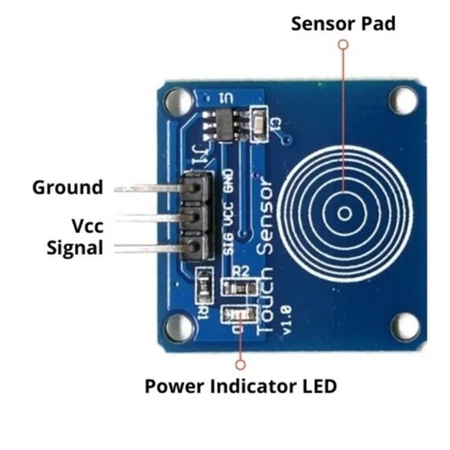
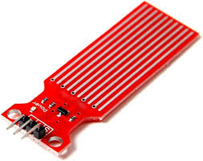
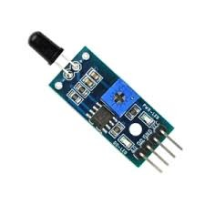
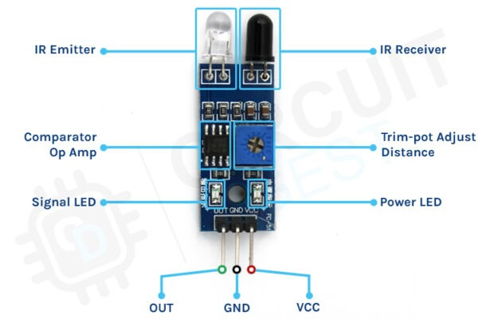
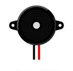
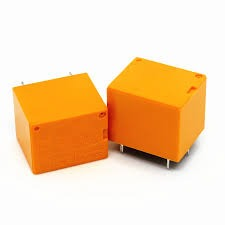
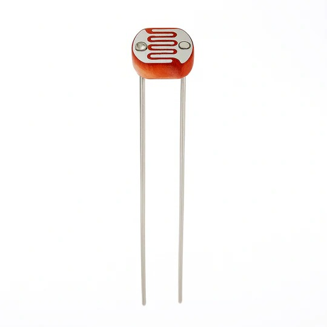
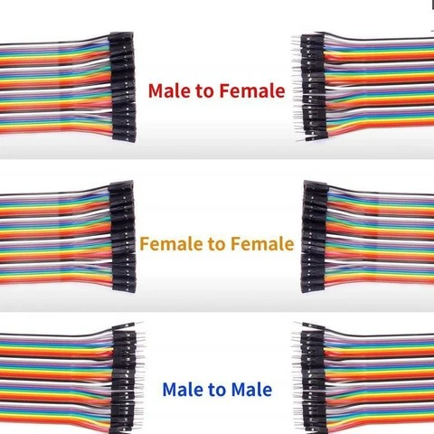
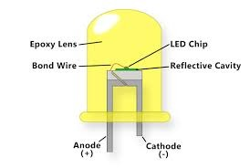

Uses: Used for identity verification and authentication in IoT systems.
Applications: Smart door locks, biometric attendance systems, security systems, and access control.

Uses: Detects water presence or level in containers and tanks.
Applications: Water tanks, automatic irrigation systems, leak detection, and smart home devices.

Uses: Detects objects or obstacles using infrared light.
Applications: Robots, automatic lighting, and smart parking systems.

Uses: Detects nearby objects without physical contact.
Applications: Mobile phones, vehicles, and automation systems.

Uses: Produces sound alerts in IoT systems.
Applications: Fire alarms, intrusion detection, smart doorbells, and attention systems.

Uses: Controls high voltage devices using low voltage microcontrollers.
Applications: Smart home automation, motor control, and industrial automation.

Uses: Detects light intensity to automate lighting systems.
Applications: Automatic street lights, solar devices, weather monitoring, and smart lighting systems.

Uses: Used to connect electronic components on a breadboard or circuit.
Applications: IoT prototypes, Arduino connections, and electronic experiments.

Uses: Indicate status of IoT circuits or provide light output.
Applications: Smart lamps, signal indicators, and home automation displays.